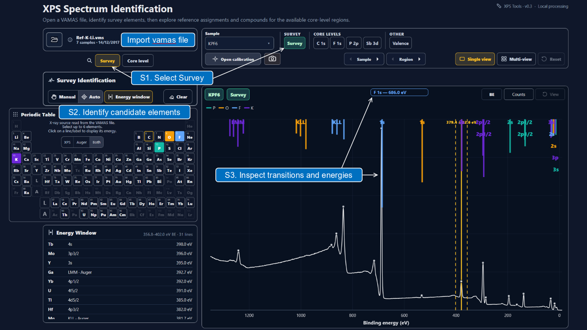
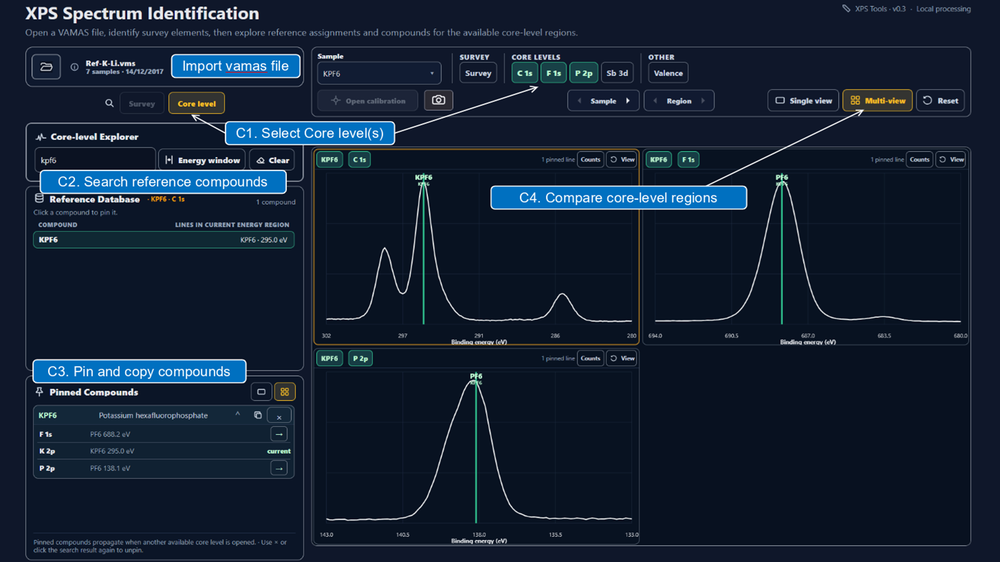

Survey
Identify candidate elements

Interpret XPS spectra from VAMAS files. Survey spectra can be analyzed in terms of possible elemental lines, while core-level regions can be compared with curated binding-energy literature references and reported peak assignments.

